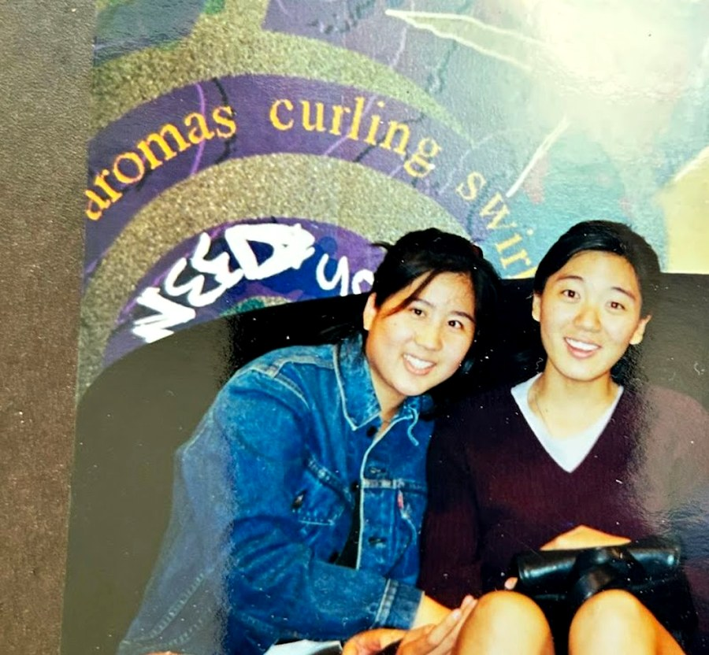

We—Jessica Lee and Emily Tsiang—met during our freshman year at UCLA in 1999.

Emily (L) and Jess (R), circa 1999.
In 2022, both of our fathers entered into hospice and died within a few months of one another.
We began this project as a way to document our grief, with the hope that it would help us continue to be in conversation with our dads, and to also preserve some of our own family histories as Chinese Americans who are part of the waishengren diaspora.